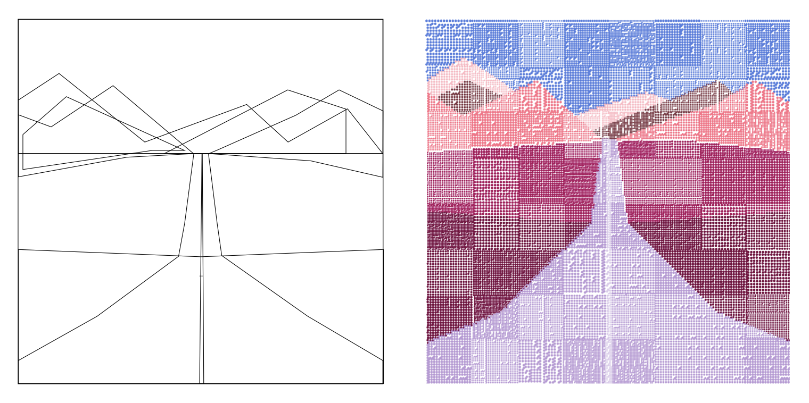

sonoran roadways
{ 🛣️ }
"Sonoran Roadways" extends my exploration of significant spaces through stipple-based digital paintings, marrying a silkscreen stencil-like style with the diverse hues of Arizona's scenic drives and sunsets
a tribute to my artistic heritage, "Sonoran Roadways" frames the journey as a pathway to cherished places – inviting an appreciation of the ordinary and a re-imagining of the road as a conduit to both the comfort of home and the thrill of new explorations
process
like my other figurative works, "Sonoran Roadways" started with a digital sketching process, by which overall composition is built out of forms that translate the scene-to-be-depicted into a set of layered geometrics forms
this initial form makes up the "coordinate blueprint" that I then translate into the various "digital screens" that the generative algorithm iterates through, applying a variation of colored stipples that paint the scene
color
"Sonoran Roadways" makes use of six color palettes, largely reflective of the vibrant hues of Arizona's landscape and the multi-colored sunsets that Arizona is known for
additionally, the project makes use of a "hue gradient" blending approach that is applied selectively to some outputs, which varies the palette to take a more fluid and dreamy form
—
two of the palettes, "Preserves" and "Lenny", are familiar friends from previous projects, carrying forward a thread of continuity
—
the remaining four, "Salmon", "Bubblegum", "Omelet", and "Poppy", are new friends, each inspired by a particular aspect of the Arizona scenery.
—
"Salmon", a mix of soft pink and deep blue, echoes the hues of the desert at dusk
—
"Bubblegum" combines light pink with a darker purple to mimic the cotton-candy colored sunsets

—
"Omelet" captures the warm tones of a sunrise over the desert
—
"Poppy" evokes the sight of wildflowers blooming against a backdrop of sky and stone
form
"Sonoran Roadways" makes use of three different variations of horizon roadway scenes (with a bonus fourth "sun match" variation), each rendered in combination with its own variation of digital stipple painting
the project also continues in the same vein as my previous work through by making use of a quilting – dividing the artwork into sections and creating a patchwork of visual interest, where each quilt patch has its own stippling parameters
following up from my project "Dot Matrix Gradient Study", this project continues to play with the glitching and distorting of stipple matrices, with a return to a figurative form